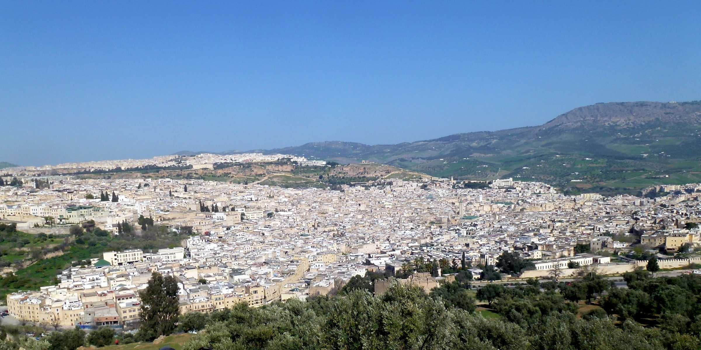
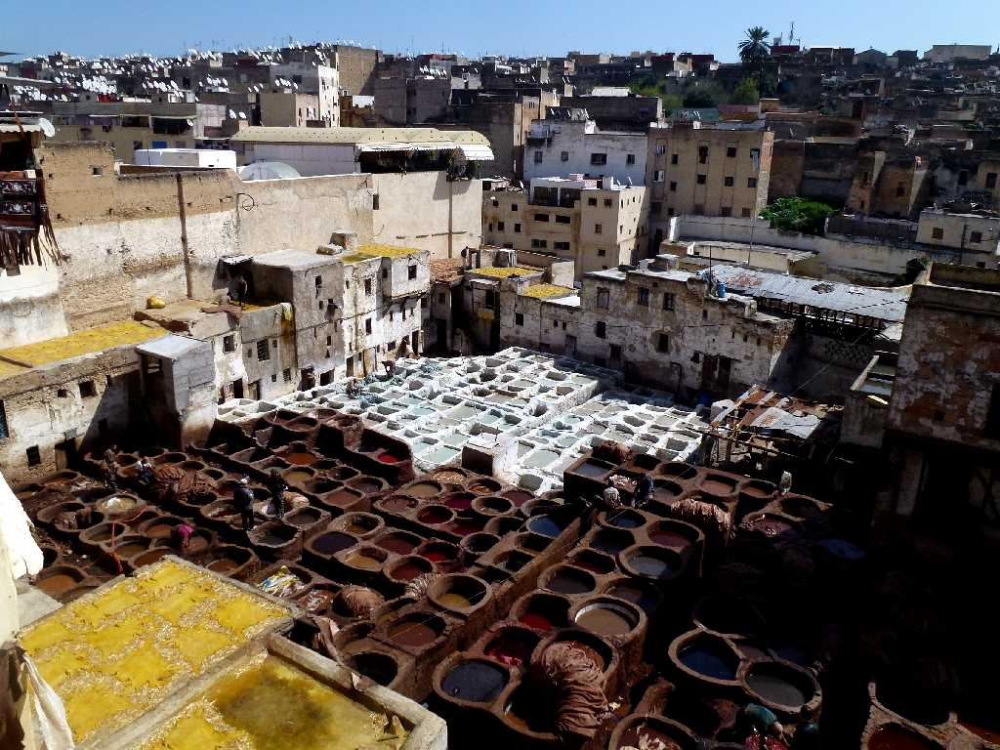
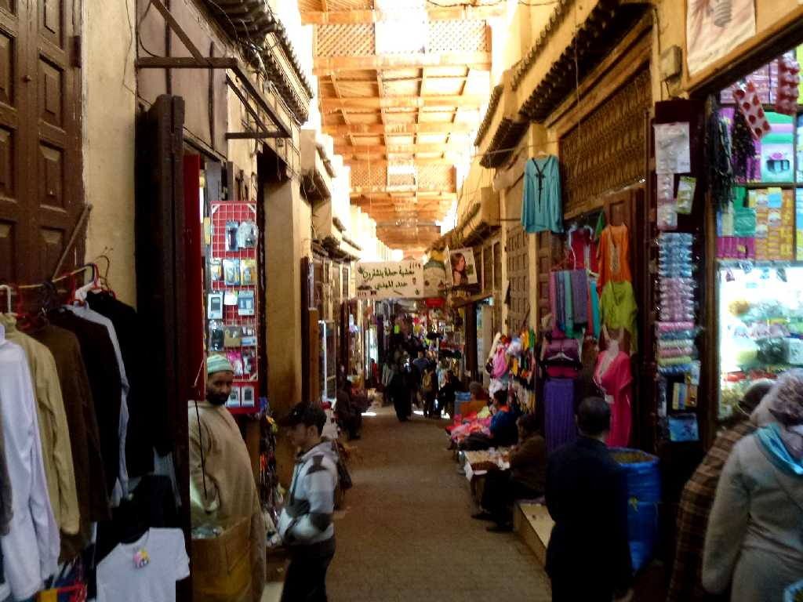
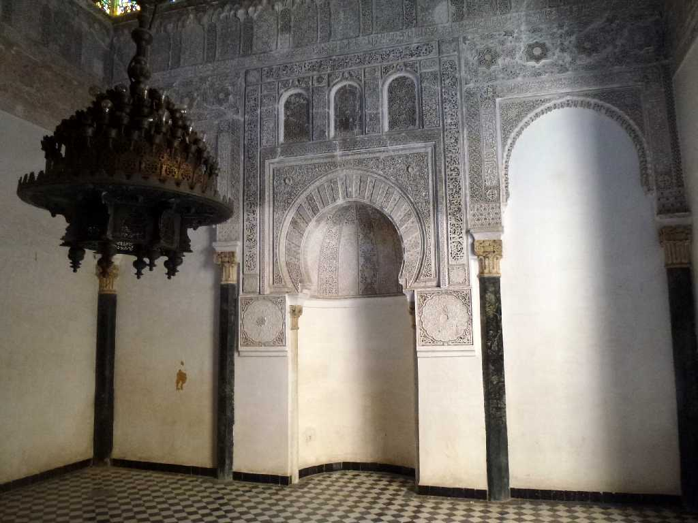
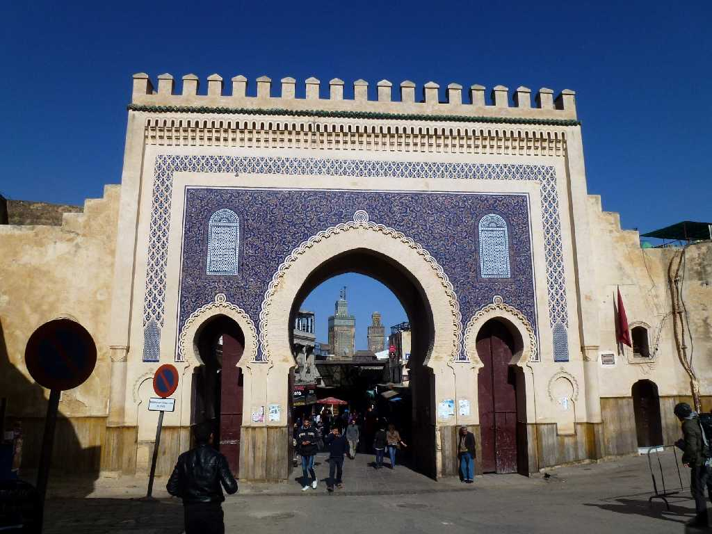
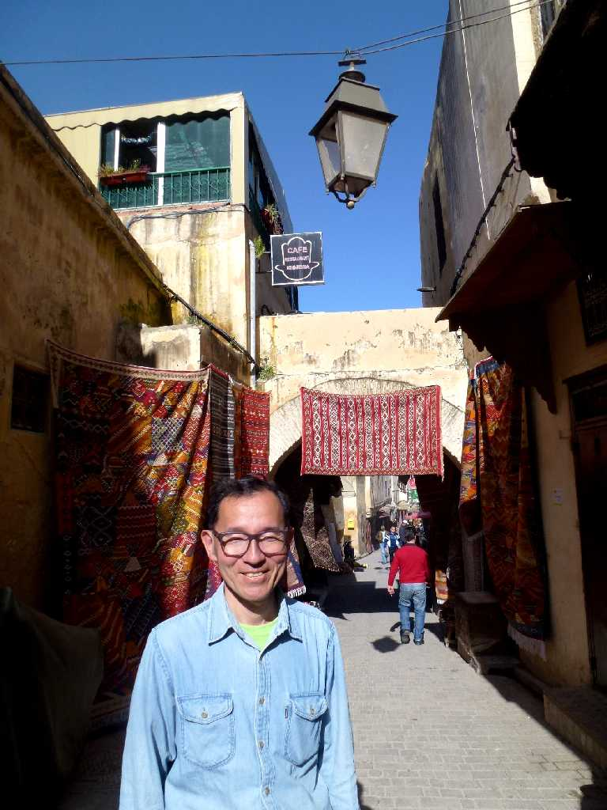
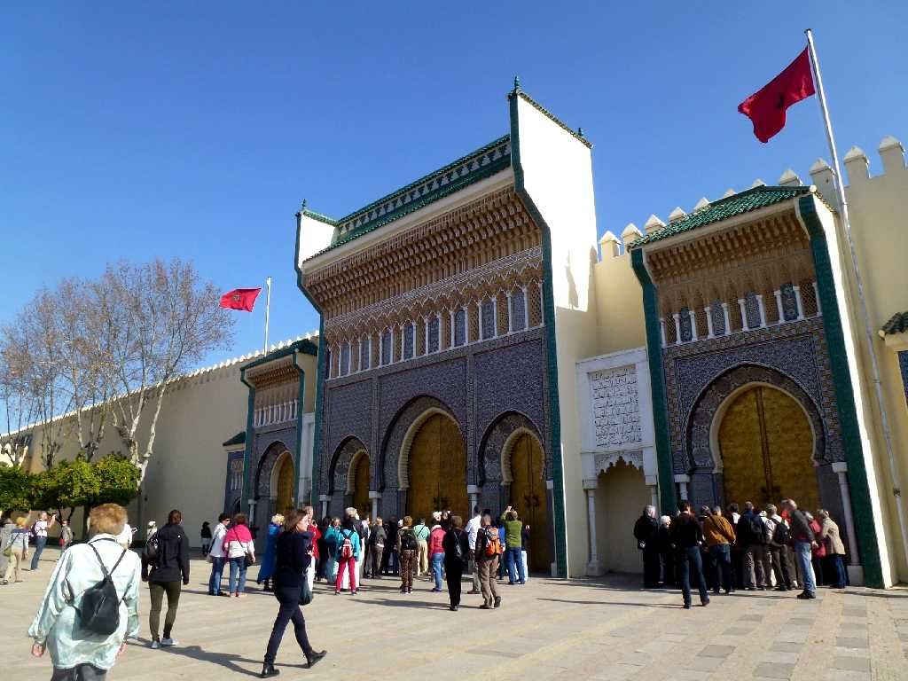
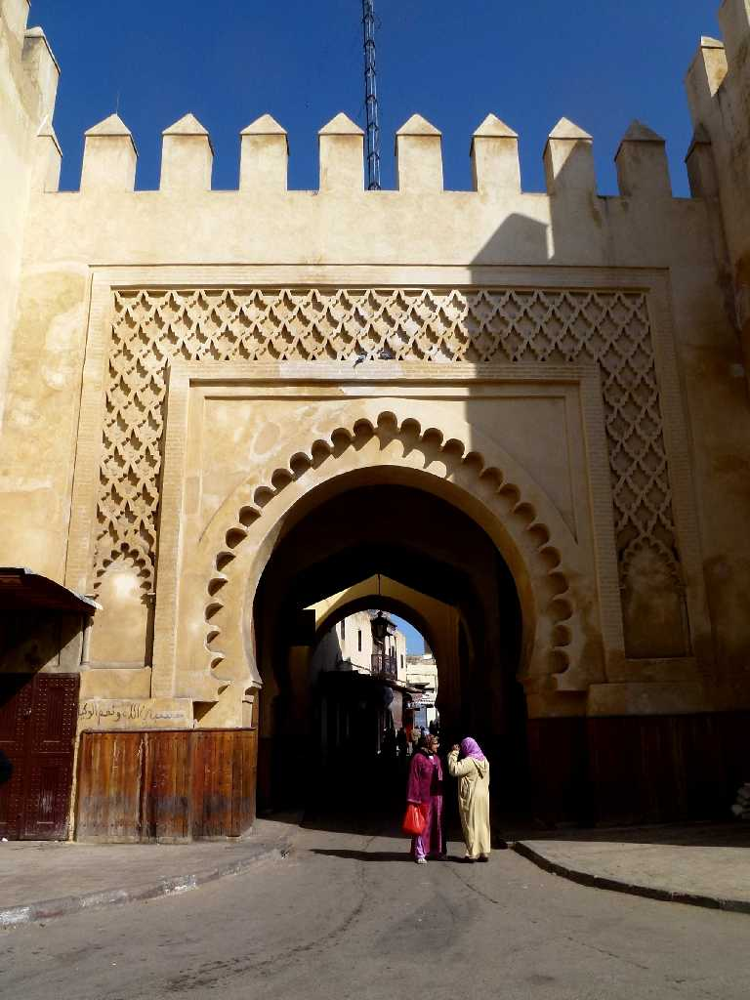

Fez el Bali Borj Sud Fez
侵略が繰り返されたため狭い通路が走る街並みは世界最大の迷路と云われる迷宮フェズ旧市街

Open Air Tanneries Fez el Bali
フェズの街は７８９年ベルベル人のムーレイ・イドリス１世により創られた

Fez el Bali
８０８年ムーレイ・イドリス２世によりイドリス朝の首都とされスペイン人ユダヤ人チュニジア人等の交流が盛んになりモロッコの宗教文化経済の中心となった

Mihrab Al Attarine Madrasa Fez el Bali

Bab Boujloud (The Blue Gate) Fez el Bali

March 11 2014 Fez el Bali
手工業が中心の旧市街には３０万人程の人々が暮らしており職住が迷宮の中にあると云われている

Royal Palace Fez

Bab Semmarine Fez